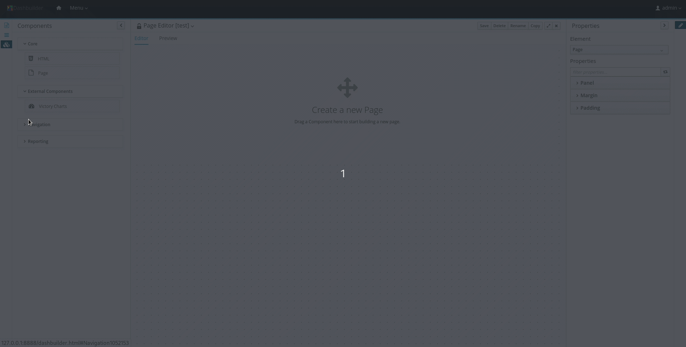

Automatically Deploy Dashboards from BC on Dashbuilder Runtime

Business Central is a tool to author and manage assets like processes, human tasks, and much more. It is also a great tool to explore data and display them in any way you want. With Dashbuilder Runtime (DB), we introduced a web application that can run any dashboard exported from Business Central.
Dashboards in Business Central
Before the jBPM 7.45 release, the import/export feature was a manual task, having the user the requirement to export a ZIP and then import it into DB. In jBPM 7.45, a new feature allows users to open pages and datasets from Business Central in DB easily.
Business Central <-> Dashbuilder link
Business Central is now linked to Dashbuilder Runtime (DB) using the gradual export feature. You select datasets and pages, but instead of downloading a ZIP, you can click on Open, and it will download the ZIP on the server and show it on Dashbuilder Runtime.

It is the same export feature, but you will not have to download the ZIP and upload it to DB. When you click on Open, the exported ZIP file is exported, and DB updates the model content when it is opened.
The downloaded model has the name ${user id}-dashboard.zip, which means users can open their models without interfering with other existing models.
This was only possible because we now have an “update mode” in DB, which makes it possible to read the latest model in a ZIP file and update the model contents. We will talk about it later.
Setup
To this automatic process work, it is required to do some configuration on Business Central to make sure that the Open Button will show up in Gradual Export

The following system properties must be set to make the open button visible:
- dashbuilder.runtime.multi must be set as true if you want users to open their models
- dashbuilder.runtime.location must be set and have the dashboard root URL as the value (e.g., http://localhost:8080);
- dashbuilder.export.dir should be set to the shared directory where DB reads its models (e.g.,/tmp/dashbuilder/models);

If you want users to share the same open model or use SINGLE mode in DB, you can set dashbuilder.shareOpenModel system property as true, and then all users will open the same model in DB.
Dashbuilder Runtime update mode
The link feature was only possible with the introduction of update mode in Dashbuilder, which means that updating a ZIP file in Dashbuilder models dir will update the dashboards. This mode is set by default, but you can turn this off by putting dashbuilder.model.update as false.
Open Dashboards in Embedded Mode
Another small new feature you will find in Dashbuilder Runtime 7.45.0.Final is the Open Page in embedded mode feature. Any dashboard page in Dashbuilder Runtime will have a button in the top right which, when clicked, opens the current page with the embedded URL

Downloading Dashbuilder Runtime 7.45.0 Final
Dashbuilder Runtime 7.45.0 Final WAR can be downloaded directly from Maven. You then need to deploy it on a Widlfly 19.0.1 or JBoss EAP 7.3.0. One easy way is to download the WAR and drop in standalone/deployments directory from jBPM Server distribution.
Download Dashbuilder Runtime 7.45.0.Final
Conclusion
We described the Business Central <-> Dashbuilder link and the open dashboard in embedded mode features. Stay tuned for more posts!